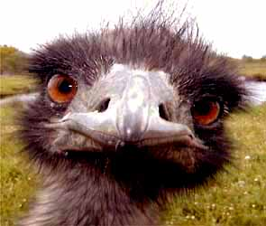
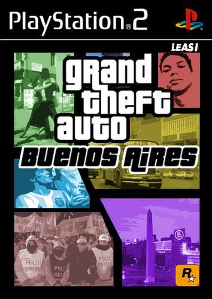
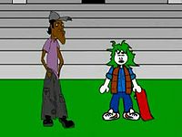

Villero
 De: La Frikipedia, la enciclopedia extremadamente seria.
De: La Frikipedia, la enciclopedia extremadamente seria.
| De la serie tribus urbanas del mundo:
|
| Villero
|
Ejemplo de la tribu
|
| Un tipo de villeros,en este caso con lentes, mas conocido como Villero Hardcore Super Street.
|
|
| Hábitat
|
Villas de Argentina
|
| Inteligencia
|
Media - Baja - Nula, en cuestiones verbales baja
|
| Frase favorita
|
(En este orden) ¿Una monedita?, No me delire, gato, Recátate o te trabo caño guacho, empezá a silbar... ¡CORRÈ, GATO!"!!ZAFA CHETOOO¡¡", Te vamo' a cacotear el rancho gil, saboreame el trabuco!
|
| ¿Peligroso?
|
Si te encuentras solo o en su territorio, sí... y mucho
|
| Obsesión
|
Te afanan todo, hasta los cordones del asfalto y la casa rodante
|
| Notas
|
Se pronuncia Vishhero o Vixxxero
|
Para otros usos de este término/definición/cosa, véase Villa (desambiguación).
Se conoce como villeros a los habitantes de la villa, comúnmente se los encuentra en Argentina. Conocidos también como negros, negros cabeza, chimbas, tumbas o esos mugrientos de ahí. Su equivalente en España son los canis.
Origen
Los análisis científicos pretenden demostrar que el origen de estos cavernicolas desevolucionados podría ser el mismo que el de los canis o flaites, incluso comparten algunas similitudes. El resto son diferencias. Hay algunas excepciones como los Lasherindios venidos del norte de Mendoza, que son descendientes directos de los aborígenes locales.
Tambien se puede verificar que son descendientes directos de los primates menos dotados de masa encefalica, se dice ésto por sus rasgos mandriles y falta de higiene (aunque tambien se comen los piojos entre ellos) y por el consumo diario de Manaos, la tercera bebida favorita de estos luego del vinito de carton y el fernet con coca.
Otro rasgo a resaltar es su ropa, que es toda de marca pero toda robada, o bien comprada en la feria hecha por un boliguayo con tela del mercado más barato de china y sus peinados al estilo He-man generalmente utizados por las mujeres usando un tazon ( robado ) y tijeras sin filo ( tambien robadas ). Pero al parecer esto no les alcanza a estos primates por lo que se pintan el cabello de amarillo con pintura ya que no tienen ni 5 pesos para ir a una peluqueria de m¡€Гd@.
Cultura villera
Advertencia: En caso de cualquier malentendido de la cultura villera no dudes: salí corriendo.
Música
Cumbia villera
Artículo principal: Cumbia villera
En las villas solo se escucha a lo que ellos consideran la choreo).
Las bandas de cumbia villera se componen de la siguiente forma: 12 k-pos tocando el mismo instrumento y otro más con un rallador de queso, que marca el ritmo. Después de cada recital, los integrantes del grupo se dispersan para poder rodear al público y robar así sus pocas pertenencias. Por lo general lo que consiguen entre sus adeptos no supera el valor de 50 pesos, pero luego lo venden en la feria a el doble de su valor original.
Otros estilos musicales
Además de escuchar cumbia villera y cumbia tradicional, también se origina en estos sectores el reggaeton y otros estilos tropicales.
Religiones
El alto grado de analfabetismo de estos oscuros (lit) expropiadores de terreno público los hace mayoritariamente católicos, aunque en las villas también convive una gran variedad de religiones: hay quienes adoran plantas de cannabis, otros tienen como ser supremo a Alf y otros tantos al Teto Medina.También adoran a los "cantantes" pateticos de la mierda llamada cumbia villera y santifican a todo putito delincuente menor de quince años que muera acribillado por la policía en alguno de los tantos robos y secuestros que conforman la actividad diaria de esta violenta infragente.
 Típicos perros que suelen usar para robarle a los policias.
 Religion a la que alaban
Literatura
Su escritura se basa en símbolos en las puertas de los ranchos que ya afanaron, con lo que indican qué se puede aún sacar. El lenguaje oral se detalla al pie de la página, ya que no usan otras expresiones.
Probablemente todo esto se aprende por la antena de TV vía satélite que hay instalada en cada rancho, originada por promociones y que, más tarde, nadie se animó a retirar (los que no tienen una TV afanada captan las ondas de las antenas con los tobillos).
Tipos de villero
- Punga: Se dedica a robar, sin que te des cuenta, si te das cuenta pasa a la siguiente categoría. Usualmente deambulan por las calles en grupos no menores de 10 integrantes. Usualmente son inofensivos a menos que tengan hambre o vean algo brillante en las prendas de otro. Ten cuidado, si te pillan distraído, te sacarán lo primero que vean que está en tu bolsillo. Para disimular, por lo general te empujarán y te pedirán disculpas.
- Pibe chorro: Como el punga, pero te das cuenta: prueba poniendo el dedo abajo de la campera (que también afanó) y si ves que es mentira sale corriendo encima tuyo para sacarte las llantas (calzado) y utiliza el clásico estilo de pelea basado en recates (recatate boludo eh!).
- Australopitecus: Se dedica a vender paco, merca, faso, pegamento y armas como lo son cascotes o cualquier elemento contundente a la mano, cuchillos Tramontina sin mango obvio (por que lo vendieron para comprar paco) y revólveres y pistolas del siglo 18.
- Fumanchero: Se dedica a fumar marihuana o cualquier elemento inflamable que entre en una pipa o se pueda picar y meter en una seda si te deja mareado mejor.
- Paquero: Se dedica a fumar paco, pasta base, o basuco o idem anterior.
- Mapuche: Hace buga buga buga y emite característicos sonidos similares al de los orangutanes o bolivianos.
- Mapuche Pseudo-deutch Mapuche con habla ligéramente mas avanzada , procedentes de Shile , dicen frases como "won" "po" "cachai" , etc... Mapuche , es por su procedencia , y Deutch es porque se creen alemanes solo porque su idioma es similar al de un Alemán Hebrio
- Boliguayo: Mezcla de indigente, boliviano y paraguayo (¡Ojo que con el merqueo de "coca" y con la concha de sus minas se están volviendo muy ricos!). Son hinchas de Voka Shuniors. Se dedican a cebar mate y chupar naranjas frente a sus chozas. A veces salen a buscar empleo. Si vuelven en pedo o completamente dados la vuelta de "laburar", salen a afanar y si no están en pedo por las dudas también.
- Cartonero: Cruce de punga "reformado" con carrito de supermercado. Este tipo de habitante de la villa es uno de los más extraños. Es el único que cuenta con un trabajo fijo y rara vez cae en la delincuencia. También es el único que cuenta con 2 medios de transportes su chango o carreta (donde tira los cartones y otros elementos que junta por ahí) y un servicio de trenes V.I.P. para uso exclusivo de los mismos. Su único medio de comunicación es por medio de gargajos o escupitajos que lanzan de su tren en movimiento así demuestran afecto o incertidumbre. El cartonero en serio es el unico villero respetable porque es un ser humano con todas las de la ley.
- Pluvio-chorro: Bueno, aunque parezca raro, esta categoria existe, lo comprobe hoy cuando volvia de la universidad. Estos negros sucios se dedican a robarte cuando llueve. Tienen un sistema muy eficaz ya que se tapan todo con una campera y paraguas (robados) y se acercan a la gente sin que se de cuenta, aprovechando que estas personas vienen muy cargadas y no pueden maniobrar para defenderse. Si se dan cuenta, el chorro tira todo lo que tiene en mano, le roba el bolso a la vieja y sale corriendo, que sorete la verdad.
Dichos Populares
A lo largo de la historia, se han creado diversos dichos populares en las villas de enorme grado cultural y lingüístico. He aquí algunas de ellas:
 Villero pidiendo alguna monedita
- No Pasa Nada, Doña: Frase utilizada para cuando estan haciendo lio y una señora va y les dice,-No hagan mas eso-, a lo que ellos responden la frase mencionada
- Vamo' A Bocear: Quiere decir: "Vamos a pelear"
- Parate de manos: Quiere decir: "Veni y Pelea"
- Vo' Bardeas: Quiere decir: "Vos hiciste algo mal"
- Se La Vamo' A Dar Al Gato Ese: "Vamos a golpear a ese individuo"
- Vo' Esta' Re escabio: "Vos Tomaste Mucho Alcohol"
- ¿Que onda con vo'?: Quiere decir "que pasa con vos" o "Que Problema tenes"
- Recatáte: Expresión que se utiliza cuando una persona hace enfadar a la otra. Significa "cálmate".
- Larga las llantas: Si te dicen eso corré. Rápido. MÁS RÁPIDO. Significa "dame tus zapatillas".
- No bardié' loco!!: Quiere decir "no me insultes o te cago a trompadas, te afano todo y me garcho a tu hermana"
- Cascotear el rancho: Expresión utilizada para referirse a "apedrearte la casa".
- Te vamo' a raya' el auto: Eso mismo. Te van a rayar el auto.
- ¿Una monedita?: Expresión utilizada para pedirle dinero a la gente. No les des. Habitualmente si uno accede se termina convirtiendo en dame la billetera, a tu hija y tu culo.
- Vieja, un peso pa la birra: Expresión utilizada para pedirte dinero para invertir en su crecimiento intelectual y familiar. Tampoco les des.
- No me deliré': Significa "no me insultes" o "no entendí que me decías". Es bien sabido que los villeros no entienden palabras de mas de 3 silabas.
- Eh, guacho!: Eso mismo.
- ¡Que te hace el pillo vo gil?:¡Que te haces el ``vivo´´?[inteligente]
- Loco, vieja, wacho, etc: Vocativos varios.
- ¡¡Dame chirola guacho!!: Pedir plata.
- ¡¡Recátate o te trabo caño guacho!!: Te van a
cagar a tiros propinar una serie de disparos.
- ¡Ñeri!: Forma cálida de decir amigo
- Ranchera: Residencia (o lo que ellos llaman casa)
- Rompe Portón: Busca
quilombo pleito/lios
- ¿¡Que agita'!?: ¿Qué peleas?
- ¡Te vamo a lleva a too lo negro!: Te va a traer a sus amigos para
cagarte a palos propinarte una serie de golpes. ¡Corre!
- IEEEEEEE: ¡Ei vos!, ¡si vos!
- ¡E vo!: item anterior
- Silbidos: Es una llamada a los compañeros villeros porque vieron a alguien a quien chorizarle.
- EEEE: Grito de batalla (Pero se rumoréa que entre ellos se entienden)
- Te vamo' a caga' a palo': Te avisan amigablemente que
te van a hacer mierda propinarte una serie de golpes.
- So' boleta: Forma sutil de decirte que
te van a cagar matando te van a asesinar amigablemente.
NOTA: Solo utilizan palabras agudas cuando "apuran" a alguien. También utilizan la emisión de sonidos ininteligibles para expresar ideas, opiniones o pedidos.
- Uy a vo´te rompo toda negra:Expresion usada para expresar que desean
mantener relaciones sexuales sanas "violarte" o violar a una mujer que justo pasaba por alli.
- Ehh gatoo pasa el tubo!:Si te dicen esto, no dudes en salir corriendo, porque te estan pidiendo el celular.
- No sea ortiva:No seas malo.
- No flashee loco:No seas fantasioso.
- EEhh amigo tene' hora?:Van a esperar a que saques el celular y te lo van a querer robar.
- Altas llantas luquiaste!: Le gustaron tus zapatillas nuevas.
- Ahi viene la gorra/los ortivas:Forma de avisar que se aproxima la policia.
- 'Ta piola tu visera:Les gusto tu gorra.
Grupos Villeros "famosos"
- Agrupación Marilin
- Super-merK-2
- Eh, Guacho
- La banda del lechuga
- El original
- Nestor en bloque
- Damas Gratis
- Mc Caco
- El Polako
- Los Pibes Chorros
- Los Wachiturros
Notas a seguir para crear un grupo villero
- El nombre del grupo tiene que ser patético y absurdo como la letra, la voz, la vestimenta, el cabello, y un largo etcétera.
- La letra de cada canción tiene que hablar sobre mujeres, bardo o directamente sobre la villa.
- La voz tiene que estar desatinada, debe ser horrible, y debe sonar como un Teletón cantando "La Comilona de Teletón".
- La vestimenta: hay que tener una camiseta muuuy larga, que llegue hasta las rodillas, mas o menos, o también podría usarse una camiseta de futbol, como un incha perdido. En algunos casos, se utilizan ambos. El pantalón: debe ser corto ¡NUNCA UTILIZARSE PANTALONES LARGOS! y debe estár prácticamente colgado debajo del canal profundo (ya saben a qué me refiero). Ropa interior: solo debe usarse UNA misma ropa interior SIEMPRE. Obligatoriamente ésta NO debe ser lavada NUNCA.
- El cabello tiene que ser muy patético, y se debe tener un nivel de soberbia muy alto con éste. Aunque es horrible y nadie en su sano juicio querría tenerlo, los villeros deben presumir del cabello.
- La canción no tiene que tener un ritmo estable.
- La canción debe tener ritmos diferentes, y nada comparables con la letra.
- El vocalista tiene que ser el más boludo del grupo.
- A nadie más que un villero tiene que atraer la música.
- TODOS los integrantes del grupo deben ser horriblemente feos.
- El vocalista debe ser rubio, en caso contrario, teñirse obligatoriamente el cabello a rubio.
- El nivel de inteligencia de cada integrante debe estar a 0%, al igual que la de un Cani. De ser posible, deben estar en un estado alcohólico muy elevado.
- El nivel de estupidez y de patetiquismo deben estar OBLIGATORIAMENTE al 100%.
- Las letras deben poseer frases como "Mueva la cola", "Que linda cola", "Mira esa cola", "Te voy a hacer la cola".
- Deben pedir al público que levante las manos con cualquier excusa.
Véase también
| Tribus Urbanas
|
 Universales Universales
 Españolas Españolas
 Argentinas Argentinas
 Chilenas Chilenas
 Colombianas Colombianas
 Mexicanas Mexicanas
 Peruanas Peruanas
 Venezolanas Venezolanas
|
Autor(es):
- Krusher
- Nexo
- Fordus
- Lance Bean
- Aque
- Roms
- Sabao
- ToxicCastle
- Nachopunk99
- Poncho
Frikipedia 2005-2016, Licencia
GFDL 1.2 - Extraído por FrikiLeaks